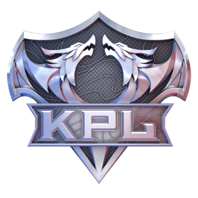
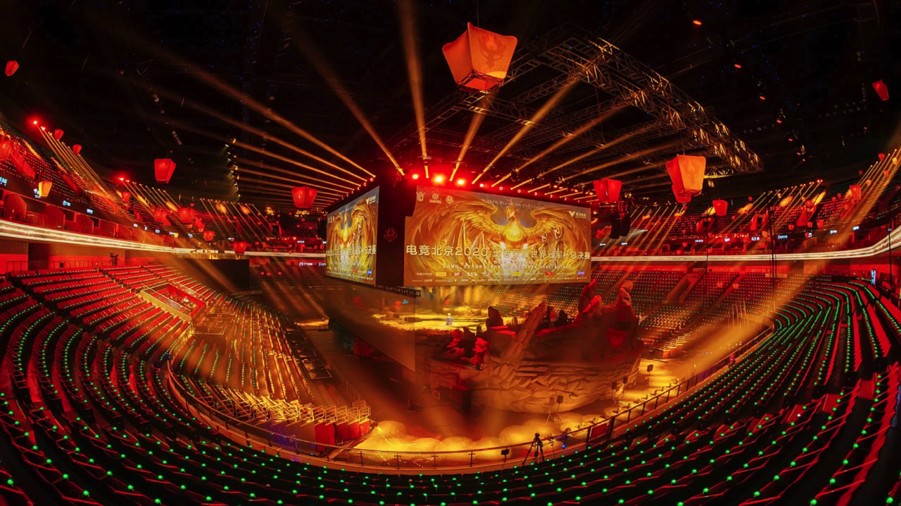
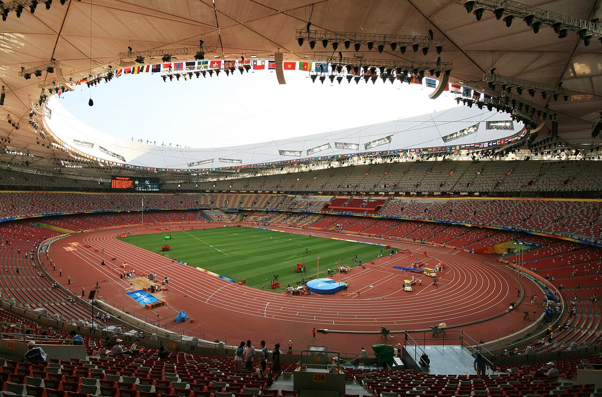

从「英雄战迹」到《王者荣耀》
2015 年 11 月 26 日，腾讯天美工作室群推出了一款 5 对 5 的 MOBA 手游。它的名字换过两次：内测阶段叫《英雄战迹》，2015 年 10 月官方宣布品牌升级、更名《王者联盟》，到正式公测时最终定名《王者荣耀》。
那一年国内移动游戏市场的主流是轻度休闲产品，行业里普遍不相信一款需要走位与配合的「重度」手游能在手机上留住玩家。《王者荣耀》给出的答案是把复杂度做减法。相比端游上的同类作品，它减少了主动装备的数量，缩短了单局时长，放宽了补刀与判定的容错，用轮盘加技能按钮重做了整套操作。对老玩家来说这是一种「降级」，对新玩家来说这就是能玩下去的理由。
这一步也解释了它后续的长尾：上手门槛低，意味着队友池子大，意味着排队快、对局多、社交关系容易沉淀。

从千万到亿级
公测后的增长曲线，是这款游戏最早的一个「不可能」。2015 年 12 月底，《王者荣耀》的日活跃用户突破 750 万，最高同时在线人数突破 100 万，刷新了当时 MOBA 手游的纪录；公测两个月内，日活跃用户又突破 1000 万。此后五年，它顺着智能手机普及与 4G 网络铺开的浪潮继续上行，2020 年国服日活跃用户突破 1 亿。
到 2025 年 10 月的十周年活动上，这组数字变成国服日活跃用户 1.39 亿、全球月活跃用户超过 2.6 亿。十年里真正稳定的东西只有一件：每个赛季都会变。
-
2015.11
公测上线
11 月 26 日以《王者荣耀》之名推出；一个月后日活跃用户突破 750 万，最高同时在线人数突破 100 万。
-
2016
KPL 职业联赛起步
KPL 首届赛事于 2016 年秋季开赛，此后逐步建立起常规赛、季后赛与总决赛的赛制框架。
-
2020
国服日活跃用户突破 1 亿
国服日活跃用户正式突破 1 亿，成为国内手游里用户规模最大的产品之一。
-
2024
成为电竞世界杯正式项目
《王者荣耀》进入电竞世界杯设项，并在沙特阿拉伯利雅得举办比赛。
-
2025.07
入选 2026 年名古屋亚运会电竞项目
2026 年爱知·名古屋亚运会将于 2026 年 9 月 19 日至 10 月 4 日举行，《王者荣耀》位列电竞项目名单。
-
2025.10
国服日活跃用户突破 1.39 亿
十周年活动上公布：国服日活跃用户突破 1.39 亿，全球月活跃用户超过 2.6 亿。
-
2025.11
年度总决赛落地「鸟巢」
11 月 8 日，KPL 年度总决赛在国家体育场举行，62196 名现场观众刷新单场电竞赛事现场观众人数的吉尼斯世界纪录，门票开售后 12 秒售罄。
从游戏产品到文化现象
KPL 的九年，是这款游戏从产品走向赛事的过程。从上海东方体育中心、成都凤凰山体育场，到深圳春茧体育馆、北京「五棵松」与「新工体」，再到 2025 年的国家体育场「鸟巢」，决赛场地的变化本身就是一条线索——移动电竞赛事在场地规格上追平传统体育场馆，用掉了将近十年。
2025 年 KPL 年度总决赛共有 62196 名观众走进「鸟巢」，其中超过 85% 来自北京以外的地区，这一数字刷新了单场电竞赛事现场观众人数的吉尼斯世界纪录。场馆周边商圈、影院还开设了「第二观赛现场」，票根经济延伸到住宿、餐饮与交通。这类现象通常被概括为「文化现象」，拆开看其实是一件事：这项赛事已经能够跨城市调动人群。
国际赛场是另一条线。2024 年，《王者荣耀》成为电竞世界杯正式设项；2025 年 7 月，它入选 2026 年名古屋亚运会电竞项目。加上 2018 年雅加达亚运会以来的参赛经历与 2023 年杭州亚运会的金牌，它的竞技属性已经进入了综合性运动会的坐标系。
{kind=link}

{kind=link}

{kind=link}

- 《王者荣耀》2015 年 11 月 26 日上线，名称依次为《英雄战迹》《王者联盟》《王者荣耀》。
- 它的第一个关键决策是主动削减端游 MOBA 的复杂度，换取更低的上手门槛。
- 用户规模从 2015 年底的 750 万日活，增长到 2020 年国服日活突破 1 亿、2025 年突破 1.39 亿，全球月活跃用户超过 2.6 亿。
- KPL 自 2016 年秋季赛起步，2025 年年度总决赛落地「鸟巢」，现场观众 62196 人、门票 12 秒售罄。
- 2024 年成为电竞世界杯正式项目，2025 年 7 月入选 2026 年名古屋亚运会电竞项目。